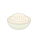
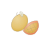

MORSEL / ART REVIEW
In the meal journal
Fictional layout fixture · not deployed UI.
Illustrations identify food only. No nutrition or portion is implied.

Jasmine rice
Illustration · no meal photo
PORTION NOT REPRESENTED
Grilled chicken
Illustration · no meal photo
PORTION NOT REPRESENTED
Mango
Illustration · no meal photo
PORTION NOT REPRESENTEDCoffee
Illustration · no meal photo
PORTION NOT REPRESENTEDA drawing, never a substitute for your photo.